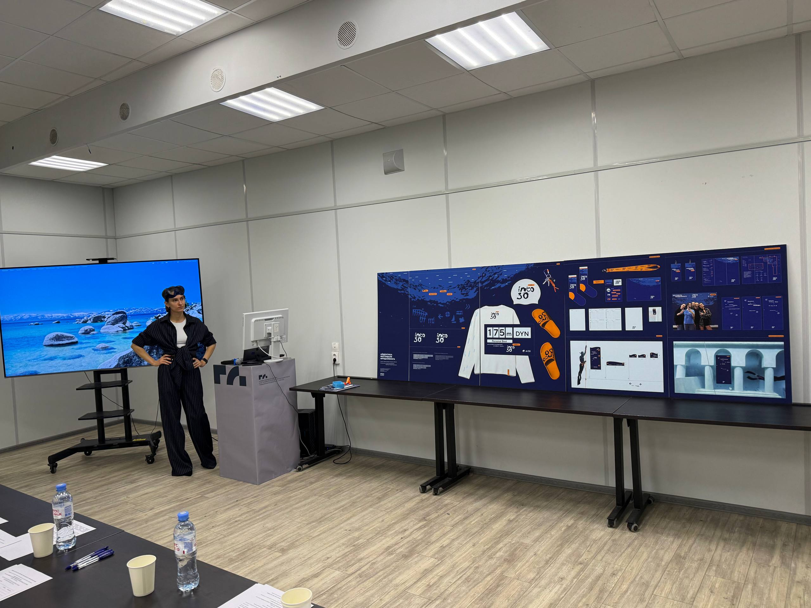
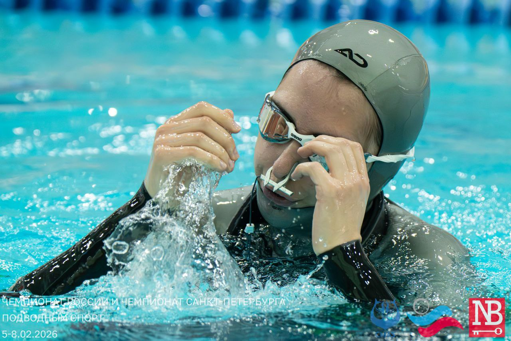
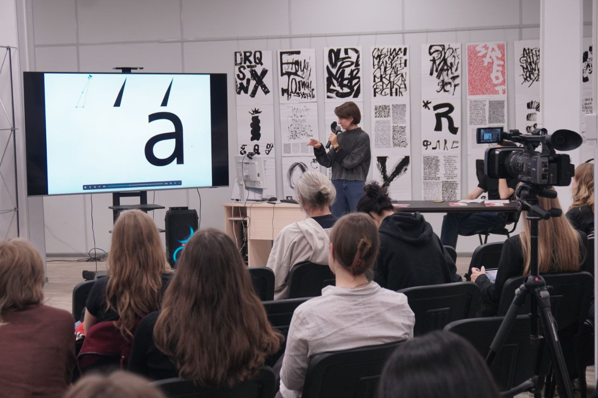

Обо мне
Шорикова Дарья
11.07.2004
junior designer
Soft skills
- Люблю придумывать новые нестандартные решения задач
- Быстро осваиваю новые навыки
- Спокойно отношусь к трудностям, благодаря фридайвингу
- Считаю, что для человека нет ничего невозможного!
- Правильно распределяю своё время
Hard skills
- Разработка концепций
- Айдентика
- Графика
- Обработка фотографий
- Вёрстка
- Анимация
- Фотосъёмка
- Лекции на конференциях
- Illustrator
- Figma
- Photoshop
- InDesign
- After effects
Высшее образование
Бакалавриат СПГХПА им. А.Л.Штиглица, графический дизайнер, 2026
Я всегда открыта для новых проектов и сотрудничества. Если вы ищете креативного и ответственного дизайнера, буду рада обсудить возможности совместной работы!